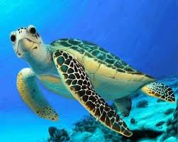
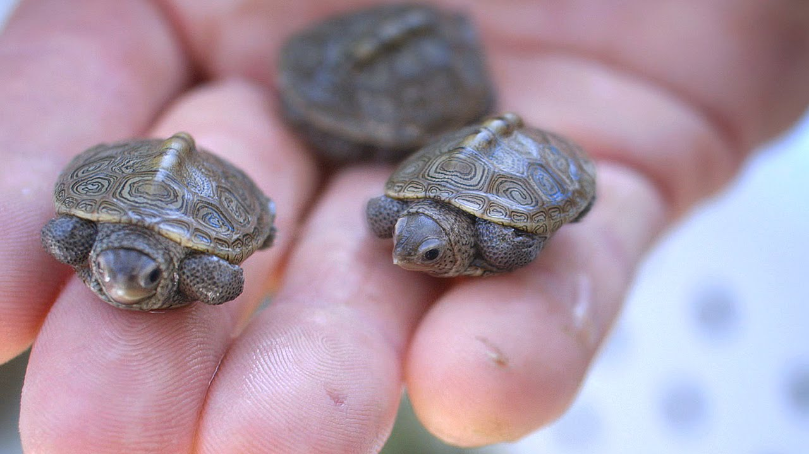
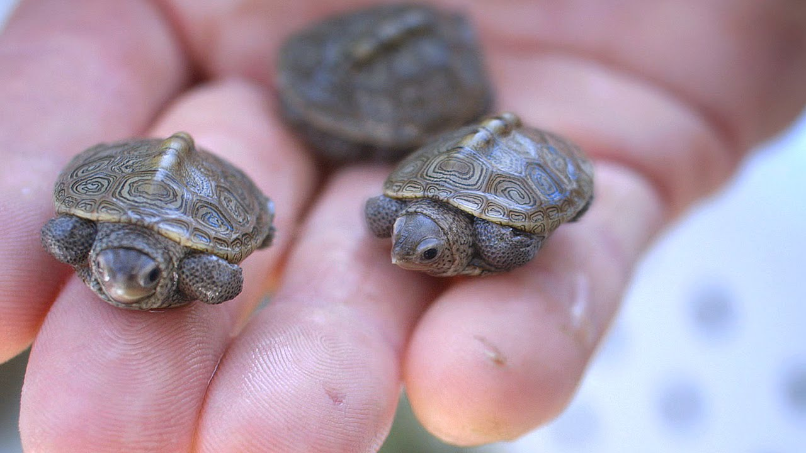
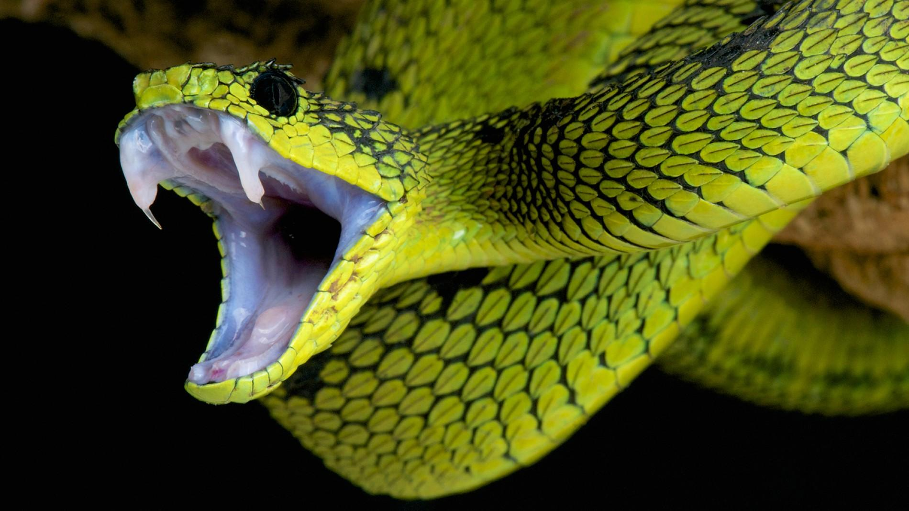
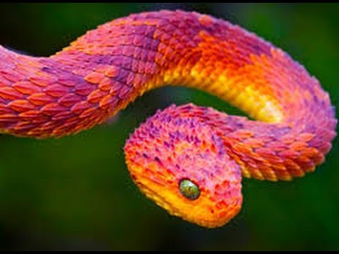
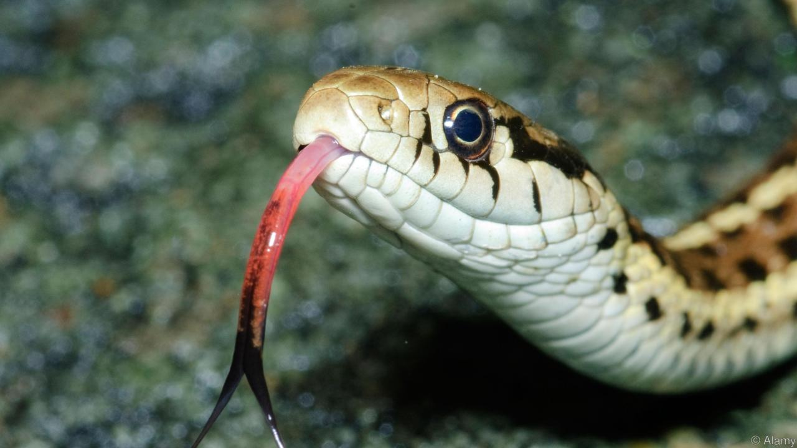
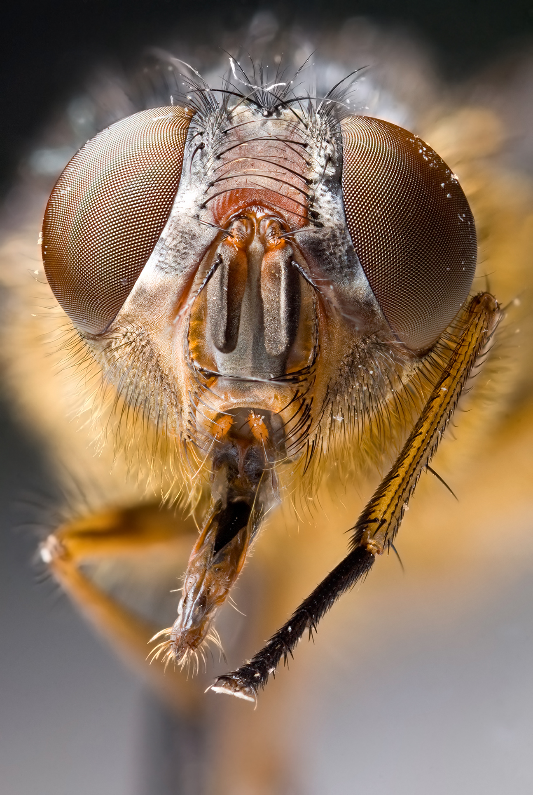
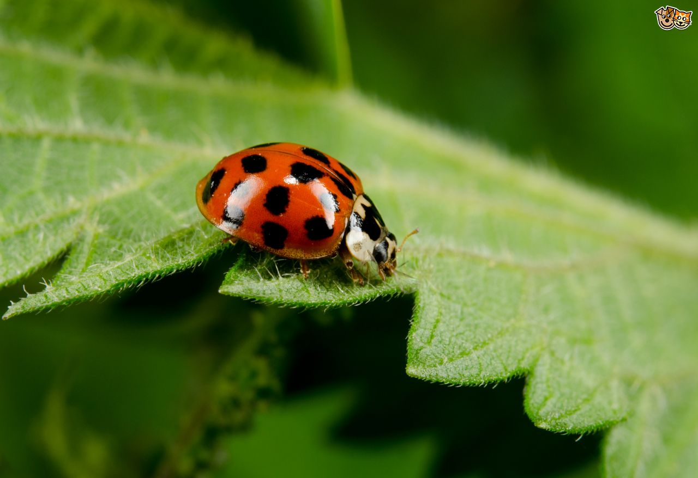
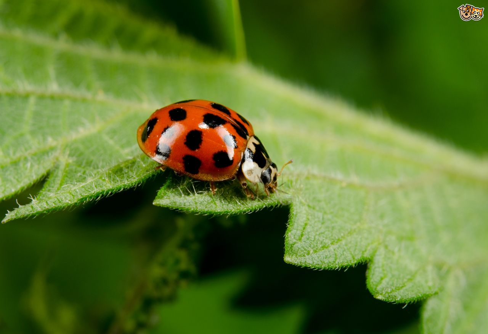

Turtles
Turtles are reptiles of the order Testudines (or Chelonii) characterised by a special bony or cartilaginous shell developed from their ribs and acting as a shield. "Turtle" may refer to the order as a whole (American English) or to fresh-water and sea-dwelling testudines (British English).
 

Snakes
Snakes are elongated, legless, carnivorous reptiles of the suborder Serpentes. Like all squamates, snakes are ectothermic, amniote vertebrates covered in overlapping scales. Many species of snakes have skulls with several more joints than their lizard ancestors, enabling them to swallow prey much larger than their heads with their highly mobile jaws.
  Insects
Insects (from Latin insectum, a calque of Greek ἔντομον [éntomon], "cut into sections") are a class (Insecta) of hexapod invertebrates within the arthropod phylum that have a chitinous exoskeleton, a three-part body (head, thorax and abdomen), three pairs of jointed legs, compound eyes and one pair of antennae.
 
